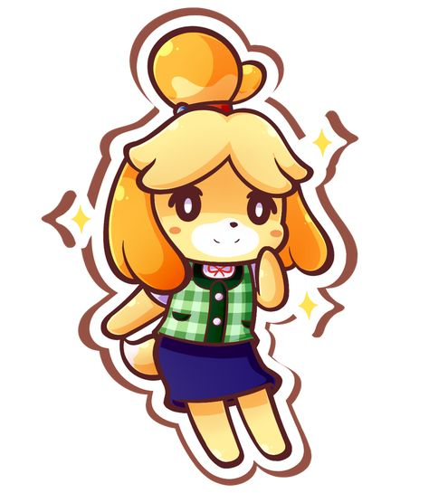
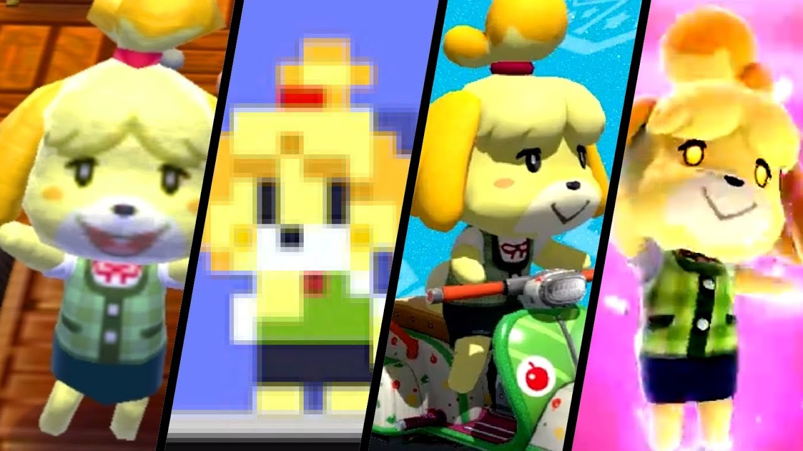
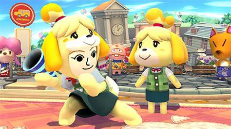
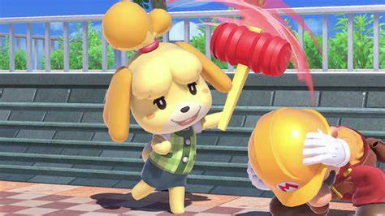

Canela
Animal crossing
Canela es una perrita Shih Tzu introducida en Animal Crossing: New Leaf. Ella ayuda al jugador con su papel como alcalde del pueblo como su secretaria y asistente. También es la hermana gemela de Candrés, que trabaja y se encuentra en la entrada principal de Academia de Artes Decorativas.

| Genero |
Especie |
| Femenino |
Perro |
Nombre en otros idiomas:
 Isabelle
Isabelle
 francia
francia
 Melinda
Melinda
 Fluffi
Fluffi
Emitologia
-
Su nombre en inglés, Isabelle, posiblemente proviene de un juego de palabras con las palabras is-a-bell (es una campana) haciendo referencia a la semejanza de su cabeza con una campana. Ella también usa una cinta roja con campanas que tintinean cuando camina.
-
Su nombre japonés, Shizue (しず) Se puede interpretar como "rama silenciosa", tal vez se refiere a la tranquilidad de un pueblo de Animal Crossing. También se puede derivar de su nombre de raza de perro "Shih Tzu".
-
Su nombre en español es Canela, un símbolo de sabiduría y buena salud. "Can" es también otra palabra para perro en España, a parte del nombre “Candela” en español, del que también deriva.
-
Su nombre francés, Marie, un juego de palabras con la palabra Mairie (ayuntamiento) o Maire (alcalde).
-
Su nombre italiano, Fuffi, un juego de palabras sobre el hecho de que ella es un perro.
-
Su nombre coreano, Yeoul (여울) significa, "rápidos" o "bajíos" de un río.

Personalidad
Canela es muy torpe y distraída y no le gusta el enfrentamiento. A pesar de esto, ella es respetuosa con los demás y es muy amigable. Al ser de mente abierta y amigable, está muy interesada en hacer de la ciudad un lugar mejor para vivir, alentando al jugador a realizar tareas y Proyectos municipales en toda la ciudad. Al igual que muchas otras secretarias, puede ser dura consigo misma cuando es dejada de lado. Canela ha mostrado su lado de gratitud y afecto al jugador. Es muy fácil hacerse amigo de ella y normalmente está muy feliz.

Apariciones
- Animal Crossing: New Leaf
- Animal Crossing: Happy Home Designer
- Animal Crossing: New Horizons
Otras apariciones
- Super Smash Bros. for Nintendo 3DS y Wii U,
En Super Smash Bros. for Nintendo 3DS y Wii U, Canela hace su aparición cumpliendo el papel de un personaje de asistencia, al invocarla, Canela ayuda al luchador que la convocó tirando varios tipos Fruta hacia ellos y que al "comerse", reducen su porcentaje de daño pero los luchadores no pueden interactuar con ella. También se incluyó un traje de Canela para el Tirador Mii como parte de Smash Bundle #2.

- Super Smash Bros. Ultimate
Canela regresa en Super Smash Bros. Ultimate, ahora como un personaje jugable en lugar de ser un asistente. Aunque tiene ataques que funcionan de manera similar a los ataques del Aldeano, no está clasificada como un luchador Eco, pues también tiene movimientos totalmente únicos que el Aldeano no tiene. Un ejemplo de ello es su movimiento especial hacia abajo, Giroide enterrado, donde Canela planta un giroide en el suelo, que se dispara hacia arriba cuando se activa. También, al igual que el Aldeano, tiene el Bolsillo como uno de sus ataques especiales. En su lateral especial, Caña de pescar, usa una caña de pescar que actúa como un ataque de largo alcance que incluso puede agarrar a los oponentes. Su movimiento de recuperación, Columpio de globos, funciona de igual manera que el movimiento especial del Aldeano, Casco de globos.
